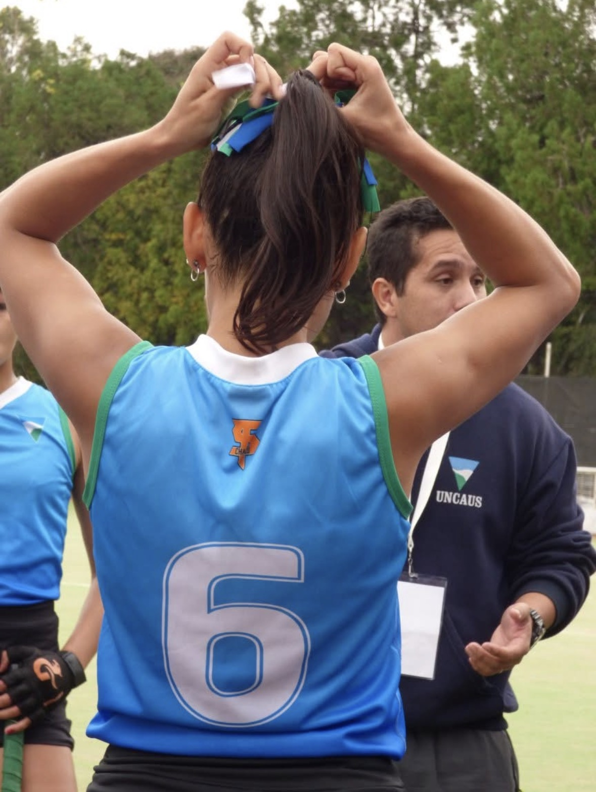

Teaching Assistant Data Science
Acompaño estudiantes en el aprendizaje de programación, análisis de datos y pensamiento técnico, ayudando a convertir conceptos complejos en explicaciones claras y aplicables.
Sports Data · Business Analytics · Audience Insights
 Florencia Sosa Comisso
Florencia Sosa Comisso
Combino analítica, marketing deportivo y estrategia de negocio para entender comportamientos, detectar oportunidades y construir soluciones basadas en datos.

PERFIL
Me interesa entender cómo se toman decisiones dentro del deporte, los negocios y las audiencias, y cómo los datos pueden potenciar ese proceso.
Durante más de 20 años practiqué hockey y distintos deportes, experiencia que me permitió desarrollar una mirada sobre estrategia, dinámica competitiva, trabajo en equipo y toma de decisiones en contexto.
Hoy aplico esa lógica al análisis de datos, combinando marketing, analítica y estrategia para convertir información en insights accionables.
ACTUALMENTE
Acompaño estudiantes en el aprendizaje de programación, análisis de datos y pensamiento técnico, ayudando a convertir conceptos complejos en explicaciones claras y aplicables.
Estudio Licenciatura en Marketing Deportivo, integrando estrategia, comportamiento de audiencias, ecosistemas deportivos y toma de decisiones.
Desarrollo proyectos exploratorios con datos deportivos para conectar performance, negocio, audiencias y oportunidades de decisión.
DATA, AI & SPORTS INDUSTRY

Participar de NXT Conference me permitió ver cómo cloud, datos e inteligencia artificial están transformando la manera en que las organizaciones deportivas diseñan experiencias, optimizan procesos y toman decisiones.
La conferencia conectó directamente con mi recorrido: análisis de datos, automatización, productos digitales, experiencia de usuarios y oportunidades de negocio dentro del ecosistema deportivo.
Me interesa seguir profundizando en cómo la IA y los datos pueden potenciar fan engagement, performance reporting, business intelligence y soluciones aplicadas al deporte.
CASO DESTACADO DATA & BUSINESS
Proyecto analítico para identificar oportunidades de cross-selling a partir del comportamiento transaccional, combinando análisis exploratorio, machine learning y pensamiento de negocio.
¿Cómo detectar combinaciones de productos con potencial de aumentar ingresos y mejorar la estrategia comercial?
EDA, modelado y simulador interactivo para identificar oportunidades de venta cruzada accionables.
+19,4% potencial estimado de uplift en ingresos a partir de recomendaciones de cross-selling.
💡 Estrategia de negocio + machine learning + análisis de comportamiento transaccional.
PROYECTOS EN DESARROLLO
Actualmente estoy desarrollando proyectos aplicados al análisis deportivo para conectar datos, rendimiento, visualización y toma de decisiones dentro del ecosistema sports business.
Proyecto en desarrollo orientado al análisis de rendimiento deportivo, visualización de KPIs, exploración de datos y construcción de insights accionables aplicados al deporte.
Exploración de datasets deportivos para analizar patrones de juego, rendimiento, eventos de partido y oportunidades de visualización aplicadas al análisis futbolístico.
ÁREAS DE INTERÉS
SPORTS & ANALYTICS PERSPECTIVE

Mi vínculo con el deporte empezó mucho antes de estudiar marketing deportivo o análisis de datos. Practiqué hockey durante más de 20 años y crecí siguiendo distintas disciplinas como fútbol, tenis, Fórmula 1, vela, rally y otros deportes.
Hoy esa experiencia se transforma en una perspectiva analítica: me interesa entender cómo se construyen comunidades, audiencias, experiencias y decisiones dentro del ecosistema deportivo.
Vivo el deporte, estudio su industria y busco analizarlo desde datos, negocio y comportamiento.
OTROS PROYECTOS DATA

Pipeline con API, monitoreo de drift y observabilidad para modelos predictivos.

Dashboard comercial orientado a KPIs, segmentación, performance y toma de decisiones.
Abierta a oportunidades donde se crucen analytics, negocio, audiencias y deporte.
Me interesan especialmente roles vinculados a Data Analyst, Business Analyst, Sports Analytics, Consumer Insights, Fan Engagement, Performance Reporting y Business Intelligence.
EXPERIENCIA EN AUDIENCIAS & PERFORMANCE
Estrategia, contenido y crecimiento de comunidades
Experiencia en desarrollo de audiencias, contenido orgánico, activaciones digitales, monitoreo de tendencias y análisis de performance para optimizar decisiones de comunicación.
Fuerza Natural — Growth & Engagement
Estrategia de contenidos y activaciones digitales para fortalecer comunidad, engagement y posicionamiento de marca.
Audience & Consumer Journey Strategy
Proyecto aplicado sobre crecimiento orgánico, customer journey y optimización de contenidos basada en insights.
Marketing Deportivo & Entertainment
Interés aplicado en audiencias deportivas, comportamiento de fans y tendencias en ecosistemas de deporte y entretenimiento.